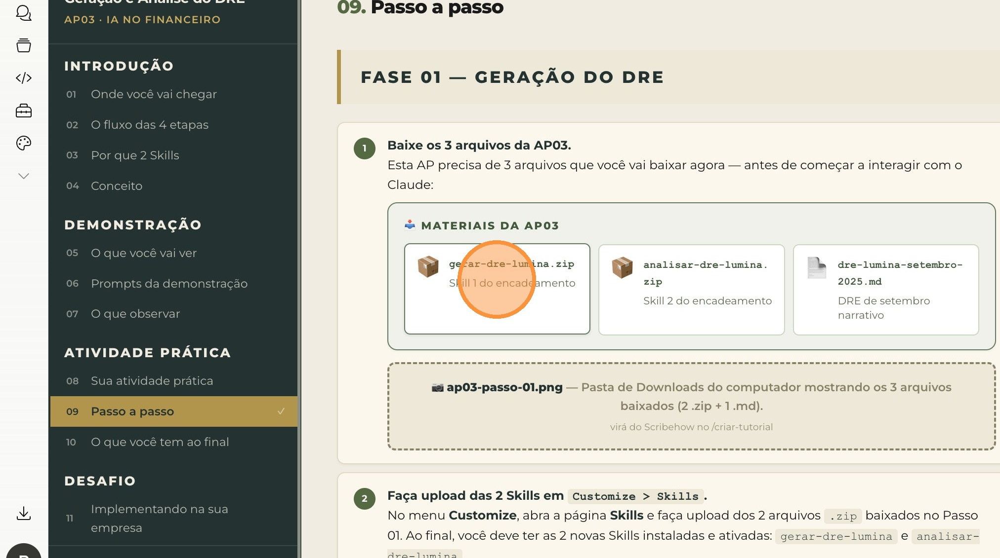

Ficha técnica
| Tipo | Introdução + Demonstração + Atividade Prática + Desafio |
| Duração | 18 minutos |
| Ferramenta | 2 Claude Skills encadeadas (gerar-dre-lumina + analisar-dre-lumina) |
| Pré-requisito | AP02 concluída — planilha estruturada de outubro/2025 baixada (lancamentos-lumina-classificados-outubro-2025.xlsx) |
| Entregável | DRE estruturado de outubro/2025 + análise narrativa em 5 blocos |
Antes de começar, veja o que você vai conquistar ao final desta atividade prática — e como ela se conecta ao destino final da aula A10.
Entregável final da AP03: o DRE estruturado de outubro/2025 da Lumina + a análise narrativa executiva no padrão Executive Summary — o conteúdo que vai compor o Painel Financeiro Lumina (AP04).
O DRE + análise que você vai gerar aqui são o conteúdo bruto do Painel Financeiro Lumina — a peça visual única que sintetiza o mês inteiro num arquivo HTML pronto para apresentar.
Sem essa AP, a AP04 não tem o que renderizar. A AP03 é o miolo intelectual do pipeline financeiro.
Recapitulando as 4 etapas do fechamento mensal financeiro — e onde a AP03 se posiciona:
A AP03 cobre 50% da Etapa 4 (análise) também — porque a análise narrativa que você vai gerar aqui é o conteúdo intelectual que a AP04 vai apenas embelezar visualmente. O pensamento financeiro acontece nesta AP.
A AP03 introduz uma escolha de design importante: 2 Skills com responsabilidades diferentes, em vez de uma Skill grande que faz tudo.
Skills monolíticas erram mais. Uma Skill que faz tudo (gerar + analisar) confunde os dois passos: perde rigor estrutural na soma e fica superficial na análise.
Skills focadas em uma única responsabilidade entregam outputs mais consistentes e são mais fáceis de manter ao longo do tempo. Cada Skill faz uma coisa e faz bem feito.
O encadeamento de Skills é quando o output de uma Skill vira o input da próxima, dentro da mesma conversa. O Claude carrega as duas Skills em sequência sem precisar de prompts longos entre elas.
A Skill 2 não precisa receber a planilha original de novo — ela lê o DRE que a Skill 1 acabou de produzir, no mesmo chat. Esse é o ganho do encadeamento: cada Skill parte de onde a anterior parou, sem retrabalho.
Encadeamento de Skills é como uma equipe pequena especializada: o contador estrutura o DRE, o controller analisa o DRE, e ambos trabalham na mesma sala — não precisam reapresentar os dados um ao outro.
Você não está terceirizando o pensamento. Está organizando o trabalho cognitivo em estágios bem definidos, cada um com a ferramenta certa para ele.
A demonstração a seguir é apenas para ilustração durante a aula expositiva. Você não precisa testar agora — você terá sua própria atividade prática logo depois desta seção.
O professor demonstra o fluxo das 2 Skills encadeadas em duas fases:
Fase 01 — Geração do DRE (1 mensagem)
O professor abre o Project Financeiro Lumina, cria nova conversa, anexa a planilha estruturada de outubro/2025 (output da AP02) e aciona a Skill gerar-dre-lumina.
Output esperado: DRE em tabela + comparativo lado a lado com setembro/2025 + bloco com as 3 margens + artefato .md para download.
Fase 02 — Análise narrativa (1 mensagem, mesma conversa)
Sem fechar a conversa, o professor envia uma nova mensagem acionando a Skill analisar-dre-lumina. A Skill lê o DRE que acabou de aparecer no chat e produz a análise narrativa em 5 blocos Executive Summary.
Output esperado: resumo executivo no chat + artefato .md com os 5 blocos completos.
A Skill analisar-dre-lumina só precisa do DRE estruturado — que já está na conversa graças à Skill 1. Esse é o princípio do encadeamento: cada Skill consome o que a anterior produziu, sem retrabalho.
São 2 prompts usados em sequência na mesma conversa:
- O DRE da Skill 1 vem em formato tabular padrão CPC — Receita Bruta → Deduções → Receita Líquida → CPV → Lucro Bruto → Despesas Op → Resultado Operacional → Despesas Financeiras → Resultado Líquido. Sem inventar linhas.
- O comparativo lado a lado set/25 vs out/25 aparece automaticamente — a Skill consultou o histórico carregado no Project sem precisar de prompt explícito.
- A Skill 2 começa lendo o DRE da Skill 1 — observe como ela referencia os números do DRE no Resumo Executivo logo nas primeiras frases.
- O threshold de materialidade está aplicado — a análise cita 3 a 6 movimentos materiais, não dezenas. Variações pequenas (abaixo de R$ 100K e 5%) são propositalmente ignoradas.
- Os 5 blocos da análise têm estrutura rigorosa — Resumo Executivo + Análise das 3 Margens + Movimentos Materiais + Olhar Prospectivo + Pontos de Atenção CFO. Sempre na mesma ordem.
Você vai instalar agora 2 Skills encadeadas na sua conta Claude e gerar o DRE + análise narrativa de outubro/2025 da Lumina. Esta AP tem duas fases:
Estrutura da atividade
- FASE 01 (10 min): instalar as 2 Skills, carregar o DRE de setembro de referência no Project, anexar a planilha estruturada e acionar a Skill
gerar-dre-lumina. - FASE 02 (8 min): na mesma conversa, acionar a Skill
analisar-dre-luminae revisar a análise narrativa em 5 blocos.
É o único momento da aula em que você vai usar 2 mensagens em uma única AP. As 2 mensagens são intencionais — é como você experimenta o encadeamento de Skills na prática.
Total da aula até aqui: 4 mensagens (de 6 totais previstos).
Você vai precisar de 3 arquivos baixados antes de interagir com o Claude. Depois você instala as 2 Skills encadeadas, carrega o DRE de setembro narrativo no Project, anexa a planilha classificada da AP02 e aciona a primeira Skill.
Pré-requisito: a planilha lancamentos-lumina-classificados-outubro-2025.xlsx baixada no final da AP02 deve estar acessível no seu computador. Se não baixou, volte rapidinho e faça o download antes de continuar.
Clique nos 3 cards do bloco Materiais da AP03 acima para baixar os arquivos no seu computador: gerar-dre-lumina.zip (Skill 1), analisar-dre-lumina.zip (Skill 2) e dre-lumina-setembro-2025.md (DRE narrativo de referência). Não descompacte os ZIPs — o Claude precisa deles intactos.

Passo 01 — Baixe os 3 arquivos (2 ZIPs + 1 MD)
No menu Personalizar > Habilidades da sua conta Claude, clique no botão "Fazer upload de uma habilidade". Você vai instalar as 2 Skills uma de cada vez.

Passo 02 — Acesse a página de Skills e abra o uploader
Clique na área de upload e selecione o arquivo gerar-dre-lumina.zip baixado no Passo 01. Confirme que a Skill gerar-dre-lumina aparece na lista com status Instalada / Ativada.

Passo 03 — Suba a Skill 1 (gerar-dre-lumina)
Repita o processo: clique em "Fazer upload de uma habilidade" novamente e selecione analisar-dre-lumina.zip. Confirme que agora você tem as 2 Skills instaladas e ativadas: gerar-dre-lumina e analisar-dre-lumina.

Passo 04 — Suba a Skill 2 (analisar-dre-lumina)
Abra o Project Financeiro Lumina (criado na AP01). Na seção Arquivos, clique no ícone + e faça upload do arquivo dre-lumina-setembro-2025.md baixado no Passo 01. Resultado: 5 arquivos no total na seção Arquivos do Project.
Você já tem o DRE de setembro na Aba 1 do historico-financeiro-lumina.xlsx carregado na AP01. Esse .md é uma versão mais detalhada e narrativa do mesmo mês — com eventos relevantes e drivers de variação. A Skill analisar-dre-lumina consome esse .md para produzir comparativos mais ricos.

Passo 05 — Adicione o DRE de setembro narrativo à seção Arquivos
Ainda no Project Financeiro Lumina, clique em + Nova conversa. Anexe o arquivo lancamentos-lumina-classificados-outubro-2025.xlsx (output da AP02) clicando no ícone de clipe 📎. Cole o Prompt 1 abaixo e clique em enviar.

Passo 06 — Planilha anexada + Prompt 1 enviado (1 mensagem)
Cerca de 60 a 90 segundos para o Claude processar a planilha e gerar o DRE.
No chat você deve ver: DRE consolidado em tabela, comparativo lado a lado set/out e bloco com as 3 margens calculadas. Confirme que o número total de lançamentos somados bate com a planilha (60). Depois clique em "Baixar" no artefato dre-lumina-outubro-2025.md para salvar.

Passo 07 — Baixe o DRE de outubro/2025 (.md)
Não abra um novo chat. Não inicie uma nova conversa no Project. Continue exatamente onde parou no Passo 07. A Skill analisar-dre-lumina precisa ler o DRE que acabou de aparecer no chat — esse é o princípio do encadeamento.
Clique no botão "Copiar prompt" no Prompt 2 logo abaixo (acionamento da Skill analisar-dre-lumina). O prompt vai para a área de transferência.

Passo 08 — Copie o Prompt 2 (acionamento da Skill 2)
Volte para a conversa do Passo 06 (não abra nova). Cole o prompt no campo de mensagem (Cmd+V no Mac ou Ctrl+V no Windows) e clique em enviar. Você não precisa anexar a planilha de novo — a Skill 2 lê o DRE que já está no chat.

Passo 09 — Cole o Prompt 2 na mesma conversa (1 mensagem)
Cerca de 60 a 120 segundos para o Claude processar o DRE e gerar a análise narrativa em 5 blocos.
No chat você verá apenas o Bloco 1 — Resumo Executivo (3-4 frases densas). Clique no artefato analise-dre-lumina-outubro-2025.md para abrir e revisar os 5 blocos completos:
- Bloco 1: Resumo Executivo (15 segundos de leitura)
- Bloco 2: Análise das 3 Margens com root causes
- Bloco 3: Movimentos materiais (3-6 itens com threshold aplicado)
- Bloco 4: Olhar prospectivo (ventos favoráveis/contrários/decisões pendentes)
- Bloco 5: Pontos de Atenção para o CFO (3-5 itens com prioridade Alta/Média/Baixa)
Clique em "Baixar" para salvar o arquivo no seu computador.

Passo 10 — Baixe a análise narrativa em 5 blocos
Você sai desta atividade com
- 2 Skills instaladas permanentemente na sua conta Claude (
gerar-dre-lumina+analisar-dre-lumina) — prontas para ser acionadas em qualquer mês futuro. - Um DRE estruturado de outubro/2025 em formato tabular CPC, com comparativo lado a lado vs setembro/2025 e as 3 margens calculadas.
- Uma análise narrativa executiva em 5 blocos — material rico que a liderança lê em 3-5 minutos, com root causes e pontos de atenção.
- Visibilidade interpretativa da operação financeira da Lumina em outubro: o que cresceu, por que cresceu, o que merece atenção.
- Material pronto para a AP04 — onde a Skill
gerar-painel-luminavai pegar o DRE + análise e produzir o painel HTML executivo final.
Na próxima atividade prática você vai usar uma terceira Skill que pega o DRE + análise que você acabou de gerar e produz o Painel Financeiro Lumina — peça visual única em HTML autocontido, com identidade visual minimalismo wellness, pronta para apresentar à liderança ou enviar para o conselho.
É o ápice visual do pipeline financeiro.
Agora que você dominou o encadeamento de Skills com o caso da Lumina, replique o mesmo processo para a realidade da sua empresa.
gerar-dre-[empresa] + analisar-dre-[empresa]O que fazer:
- Baixe os 2 prompts de geração das Skills (disponíveis abaixo) — são os prompts que criam as Skills da Lumina, e que você vai customizar para a sua empresa.
- Adapte cada prompt trocando todas as menções à Lumina pelo perfil real da sua empresa:
- Setor e estrutura (wellness com 3 produtos + e-commerce + 2 lojas → realidade da sua operação)
- Estrutura do DRE (linhas que fazem sentido para o seu negócio — empresa de serviços tem CPV diferente de empresa de produtos)
- Threshold de materialidade (R$ 100K + 5% da Lumina → calibre para o porte da sua empresa: menor pode usar R$ 20K + 3%; maior pode usar R$ 500K + 5%)
- Tons e estilo (alinhar à identidade da sua marca)
- Envie cada prompt adaptado ao Claude (em conversas separadas) e gere as 2 Skills
gerar-dre-[empresa]eanalisar-dre-[empresa]. - Faça upload dos 2
.zipgerados em Customize > Skills na sua conta. - Garanta que o Project Financeiro da sua empresa tem o histórico financeiro e (idealmente) um DRE narrativo do mês anterior carregados.
- Acione as 2 Skills em sequência com a planilha real classificada da sua empresa (output do Desafio da AP02) e valide o output das duas.
Você já configurou o ambiente (AP01), eliminou o gargalo da classificação (AP02), e agora tem o miolo do pipeline financeiro funcionando (AP03). Em 3 dias, você cobriu 60% do pipeline financeiro completo da sua empresa.
Faça este desafio depois de amanhã — em 5 dias você tem o pipeline rodando com os dados reais da sua empresa.